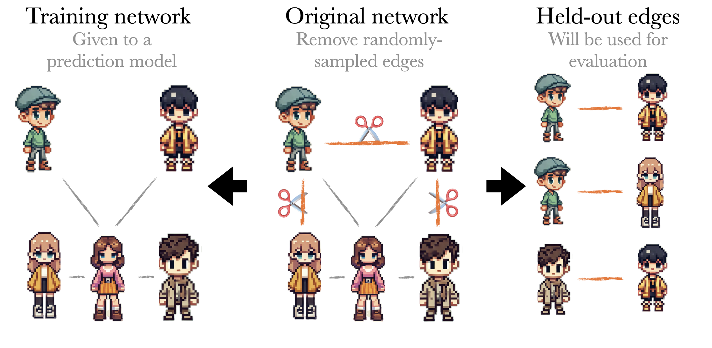
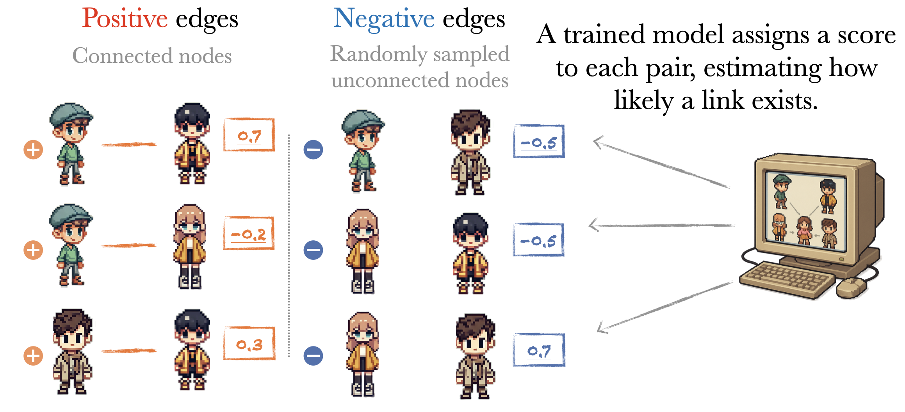

Implicit degree bias in the link prediction task
Summary
Link prediction benchmarks are widely used to evaluate models for recommendations and discovery. However, a subtle design flaw—uniform sampling of edges—introduces a degree bias that inflates performance scores for trivial heuristics. In a benchmark of 27 models across 95 real-world networks, we find that many models achieve excessively high benchmark performance by merely identifying high-degree nodes, not learning structural patterns. This post explains how this happens and outlines steps to fix the evaluation pipeline.
import pandas as pd
import marimo as mo
import numpy as np
plot_data = pd.read_csv("https://localhost:1313/assets/aucroc-agg.csv")
focal_method_dict = {
"preferentialAttachment": "Preferential Attachment",
"Buddy": "BUDDY",
"fineTunedGAT": "GAT",
"fineTunedGraphSAGE": "GraphSAGE",
"node2vec": "node2vec",
"resourceAllocation": "Resource Allocation",
"localPathIndex": "Local Path Index",
}
plot_data["model"] = plot_data["model"].map(
lambda x: focal_method_dict[x] if x in focal_method_dict else x
)
method_button = mo.ui.radio(
focal_method_dict.values(),
value="Preferential Attachment",
inline=True,
label="🤖 **Link prediction method**",
)
sampling_method_dict = {
"Standard (No degree correction)": "uniform",
"Proposed (Degree correction)": "degreeBiased",
"HearT": "heart"
}
sampling_button = mo.ui.radio(
sampling_method_dict.keys(),
value="Standard (No degree correction)",
inline=True,
label="🎯 **Benchmark type**",
)
mo.vstack([method_button, sampling_button])
import altair as alt
# Assuming plot_data is your original dataframe
# Prepare the data similar to the original code
focal_sampling_method = sampling_method_dict[sampling_button.value]
df = plot_data.query("negativeEdgeSampler == @focal_sampling_method").copy()
df["isFocalMethod"] = df["model"] == method_button.value
df = df.sort_values("lognorm_sigma")
df["data_code"] = np.arange(df.shape[0])
df["data_code"] = 100 * df["data_code"] / df["data_code"].nunique()
# Create tooltip with dataname and model name
tooltip = [
alt.Tooltip("data:N", title="Dataset"),
alt.Tooltip("model:N", title="Method"),
alt.Tooltip("score:Q", title="AUC-ROC", format=".3f"),
]
# Common x and y axis definitions
x_axis = alt.X(
"data_code:Q", title="Graphs", scale=alt.Scale(domain=[-1, 101])
)
y_axis = alt.Y("score:Q", title="AUC-ROC", scale=alt.Scale(domain=[0.2, 1.01]))
# For focal method points, first create a black stroke layer
focal_points = (
alt.Chart(df.query("isFocalMethod"))
.mark_circle(stroke="black", strokeWidth=1)
.encode(
x=x_axis,
y=y_axis,
size=alt.value(100),
color=alt.value("#FF7F0E"),
tooltip=tooltip,
)
)
# For non-focal method points
other_points = (
alt.Chart(df.query("isFocalMethod == False"))
.mark_circle()
.encode(
x=x_axis,
y=y_axis,
size=alt.value(40),
color=alt.value("#d3d3d3"),
tooltip=tooltip,
)
)
# Layer the charts with non-focal points below focal points
chart = (
(other_points + focal_points)
.properties(width=550, height=450)
.configure_axis(labelFontSize=16, titleFontSize=16)
.configure_view(strokeWidth=0)
)
# To save the plot (interactive features will only work in HTML format)
# chart.save(output_file_uniform + ".html")
# Display the chart
chart
How Link Prediction is Typically Evaluated
Link prediction aims to identify missing connections in networks, which is essential for applications ranging from social media recommendations to drug discovery.
Standard benchmarks for testing link prediction algorithms follow a simple process: take a complete network, randomly remove some edges to create a test set, and train models on the remaining network.

The link prediction model then scores both the held-out edges and randomly sampled non-existent edges. Performance is typically measured using AUC-ROC, which shows how well the model distinguishes between real missing edges and random non-edges. A higher score means the model is better at ranking actual connections above non-connections.

Benchmark results
To demonstrate the issue of the benchmark, we benchmarked 27 different link prediction methods on 95 real-world networks, including social, technological, and biological graphs. These ranged from small graphs with a few dozen nodes to massive networks with over 100 million. The link prediction methods covered a range of techniques (i.e., topological, embedding-based, and graph neural networks).

And yet, one of the top performers across these datasets was Preferential Attachment, a method that simply scores node pairs by multiplying their degrees: $$ s_{ij} = k_i \cdot k_j $$
This method does not learn anything from the data. It uses no features, no labels, and no training. And still, it consistently achieved AUC scores above 0.9 on large, high-profile datasets:
- 0.94 on a citation network of 95M papers
- 0.91 on the US patent citation network
- 0.93 on a protein interaction network
- 0.99 on a drug interaction network
These results should be alarming.
The Problem Isn’t the Model — It’s the Benchmark
What these results suggest is that current link prediction benchmarks are not really testing what we think they are. When the evaluation procedure rewards models for reproducing node degree rather than learning structural patterns, we are encouraging the development of models that succeed by shortcut.
In fact, a trivial model that exploits degree can outperform sophisticated GNNs, simply because the benchmark leaks that information through its sampling strategy.
The implication is clear: models can appear to perform well, even when they fail to generalize or capture meaningful network structure.
Where Do We Go From Here?
Fixing this problem doesn’t mean discarding benchmarks—it means designing better ones. Specifically, we need to:
- Control for degree when sampling test edges and negatives.
- Stratify or balance the evaluation sets to reflect structural diversity, not degree imbalance.
- Use evaluation metrics that are less sensitive to class imbalance and structural shortcuts.
Without these changes, our benchmarks will continue to tell us comforting lies about model performance.
If you’re building or evaluating link prediction models, take a moment to ask: What is my benchmark really measuring?
Sometimes, the answer isn’t what you hoped.
Contact 📧 skojaku@binghamton.edu 🧠 kojaku.github.io
- info
- a (nearly) no-CSS, fast, minimalist Hugo theme ported from riggraz/no-style-please.
- github repo
- all posts
- posts by category
- rss
- another list
- with subitems
- with subsubitems
- example page
- PRO TIP
- to edit this menu, edit data/menu.toml file